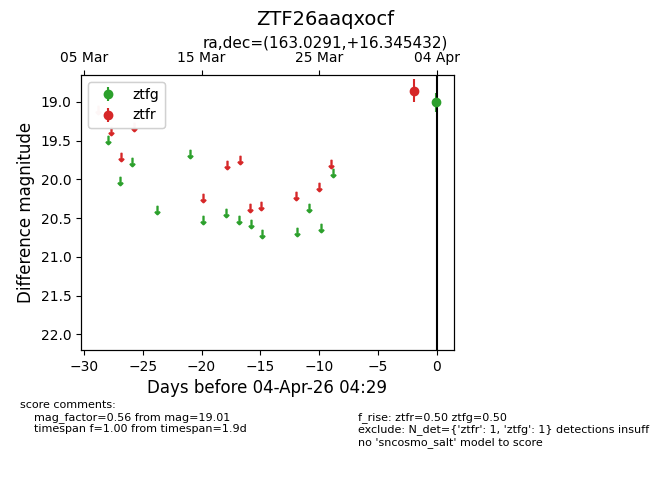
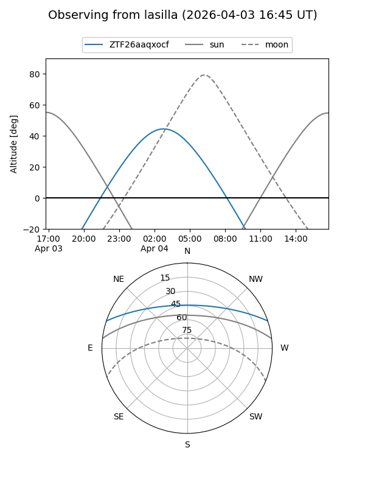
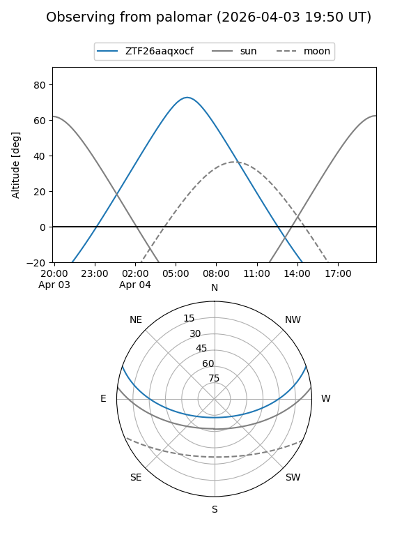

ZTF26aaqxocf
Target ZTF26aaqxocf at 2026-04-04 04:32
Aliases and brokers:
FINK: link
Lasair: link
ALeRCE: link
alt names
ZTF26aaqxocf (ztf,fink_ztf)
Coordinates:
equatorial (ra, dec) = 163.0291,+16.34543
equatorial (HMS+DMS) = 10:52:06.99,+16:20:43.55
galactic (l, b) = (228.0676,+60.36441)
Flags:
Photometry:
last ztfg=19.01, ztfr=18.85
1 ztfg, 1 ztfr detections
Lightcurve

Visibility


Additional plots